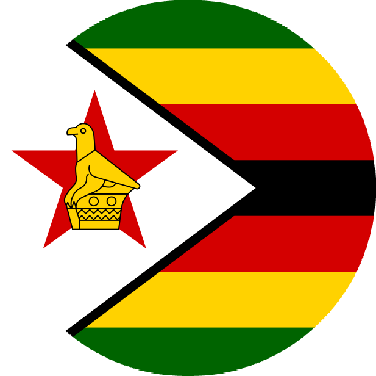
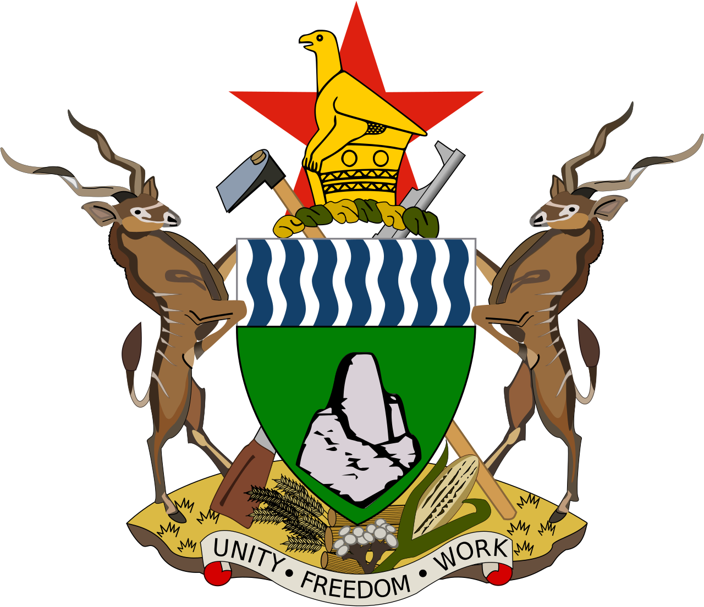
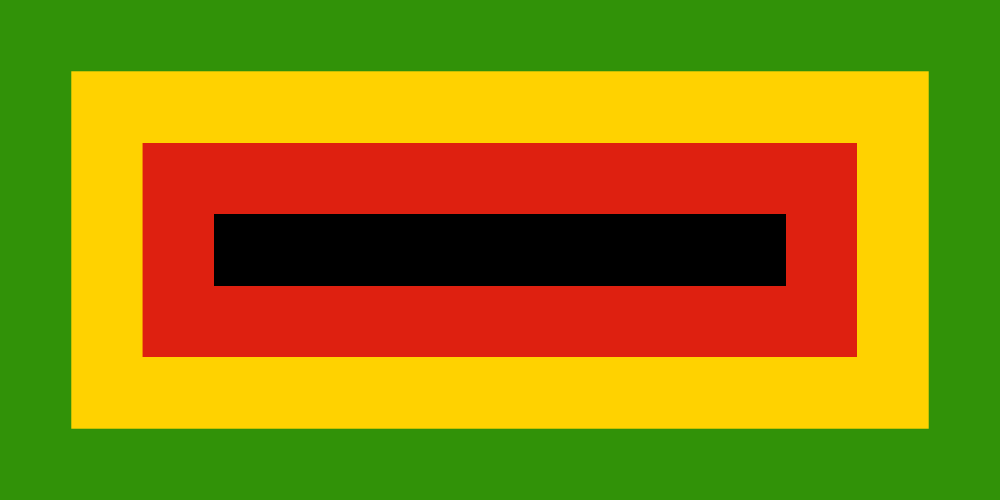
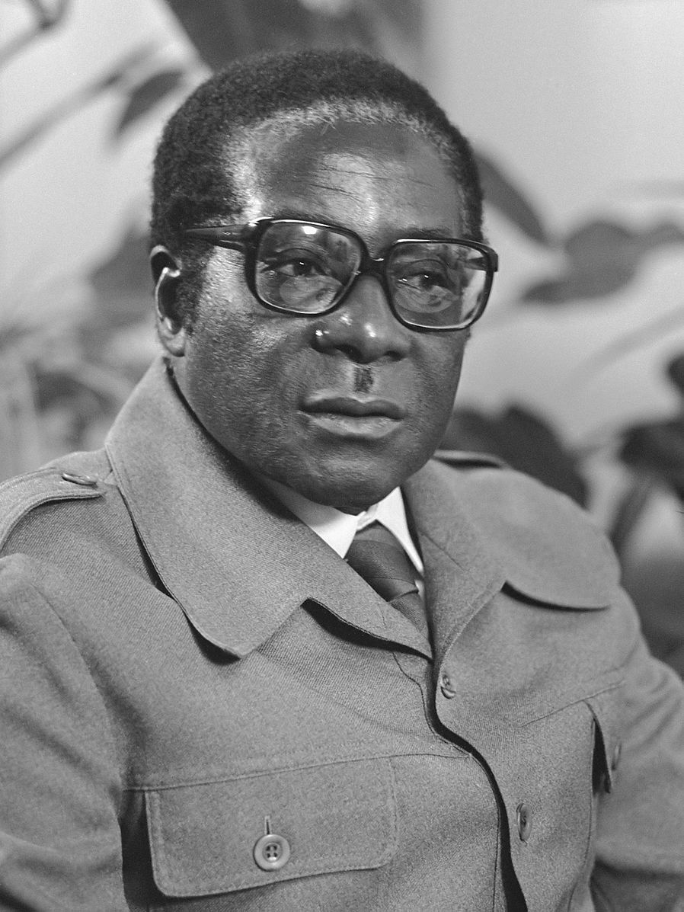

THE REPUBLIC OF ZIMBAMBWE


"Unity, Freedom, Work"
FIRST PRESIDENT


- Canaan Banana.
- Political Party Z.A.N.U.
- In Office From:18 April 1980.
- In Office until:31 December 1987.
- Born:5 March 1936.
- Died:10 November 2003.
- Aged:67 years Old.
SECOND PRESIDENT

- Robert Gabriel Mugabe
- Political Party Z.A.N.U-P.F.
- In Office From:31 December 1987.
- In Office until:21 November 2017.
- Born:21 February 1924.
- Died:6 September 2019.
- Aged:95 years Old.
THIRD PRESIDENT

lncumbet President
- Emmerson Dambudzo Mnangagwa
- Political Party: Z.A.N.U-P.F
- In Office From: 24 November 2017.
- Born: 15 September 1942.
- Aged: 81 years Old.